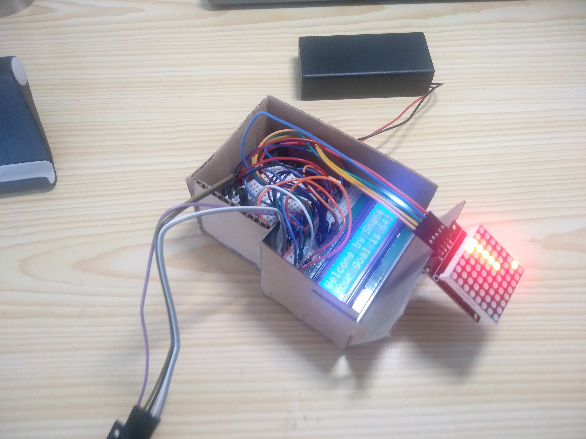
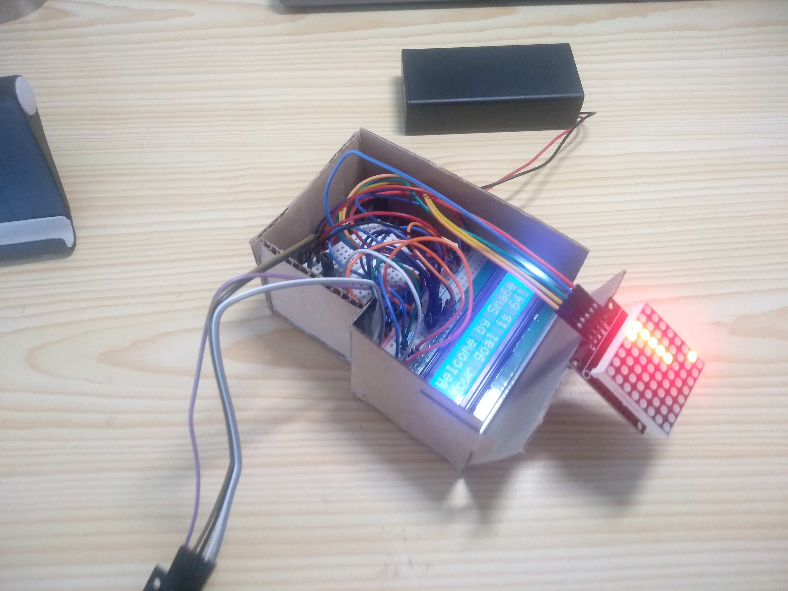

Was ist Arduino?
Arduino ist eine Open-Source-Elektronikplattform, die auf benutzerfreundlicher Hardware und Software basiert. Es ist eine großartige Möglichkeit, um in die Welt der Elektronik und Programmierung einzutauchen.
Mit Arduino kannst du interaktive Projekte erstellen, die Sensoren, Motoren, LEDs und vieles mehr verwenden. Es ist ideal für Anfänger und Fortgeschrittene.
Die Arduino-Community ist riesig, und es gibt viele Ressourcen, Tutorials und Projekte, die dir helfen, deine Ideen zum Leben zu erwecken.
Hier sind einige der häufigsten Anwendungen von Arduino:
- Robotersteuerung
- Hausautomatisierung
- Sensorüberwachung
- Interaktive Kunstprojekte
- Prototyping von Elektronikprojekten
Und hier sind ein paar Bilder von Projekten:
From Zero to Hero
Der Einstieg in Arduino ist einfacher, als du denkst! Hier sind die grundlegenden Schritte, um loszulegen:
- Besorge dir ein Arduino-Board: Das Arduino Uno ist ein großartiges Board für Anfänger.
- Lade die Arduino IDE herunter: Besuche die offizielle Arduino-Website und lade die Entwicklungsumgebung (IDE) herunter.
- Verbinde dein Board: Schließe dein Arduino-Board mit einem USB-Kabel an deinen Computer an.
- Schreibe deinen ersten Sketch: Öffne die Arduino IDE und schreibe ein einfaches Programm, wie das Blinken einer LED.
- Lade den Sketch hoch: Klicke auf den Upload-Button in der IDE, um dein Programm auf das Board zu übertragen.
- Experimentiere: Probiere verschiedene Sensoren, Aktoren und Projekte aus, um mehr zu lernen!
Arduino bietet eine großartige Möglichkeit, Elektronik und Programmierung auf einfache und unterhaltsame Weise zu lernen. Viel Spaß beim Experimentieren!
Gute Tips:
- Benutze auch Mobile-app Guide, da findest du Hilfe für Komplizierte Sachen.
- Lerne zumindest die wichtigsten Sachen im C++ (auch in der App).
- WEN ETWAS GEHT, DANN GEHT ES!
- Du kannst auch mein Guide besuchen.
- Wahrscheinlich kannst du auch mich fragen, (wenn ich zeit habe:).
Sowas ist Gut:
Jetzt mein Projekt
-Was war die idee?
-Keine Ahnung, ich wollte einfach was machen, und ich hatte auch keine Lust mehr zu lernen, also habe ich einfach gemacht.
-Was ist das Projekt?
-Erstens, hab ich mir ein Paar Modulen ausgesucht, und fand es Lustig, wenn ich endlich weiß, wie ich sie benutzen kann.
-Was ist daraus geworden?
-Ich habe ein spiel gemacht, dass man Snake nennt.
-Wie funktioniert das?
-Ich habe Module benutzt, wie: LED Matrix 8x8, Analog Joistick und LC Display.
-Wie funktioniert das?
-Dass Programm findest du in meinem Guide.
-Kann man das sehen?
-...


 

Zusammenfassung und Ergebnisse
Wir haben uns mit Arduino kennengelernt und teilweise verstanden was er kann.
Am anfang dieses Projekts wusste ich nicht mal wie der Snake sich bewegen wird und wie ich verstehen kann ob ich mich selber esse oder das Essen
Trotzdem kann ich jetzt sagen dass wenn man weiss wie alles einzeln funktioniert, gibt es keine grnzen
In diesem Projekt haben wir die Grundlagen von Arduino kennengelernt und ein einfaches... Projekt erstellt.
Ausser dass der projekt viele Bugs hat und Arduino auch brennen muss, um genug speicher zu geben.
Aber wie ich in meinem Guide gesagt habe:
As you can see, the snake game is a bit more complicated.
We have to use a lot of arrays to store the position of the snake.
We also have to use a lot of functions to make the code more readable.
Also my Snake game is not the best, but it works.
It is a bit buggy, but it works.
It is a bit slow, but it works.
It is a bit ugly, but it works.
It is a bit boring, but it works.
It is a bit hard to understand, but it works.
It is a bit hard to play, BUT I LOVE IT AND IT IS OPEN-SOURSE BECAUSE I CAN AND I HAVE THE RIGHT! BECAUSE ITS WRITTEN BY Me... roman.